W13 <<
Previous Next >> W16 吸盤手臂
W15
影片整理
影片1
首先要先找出A1以及A2的夾角，可以透過畢氏定理列出

並透過餘弦定理可以將公式轉換為
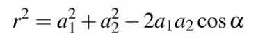
將公式用COSalpha表示，並將r2次方帶入第一個公式得
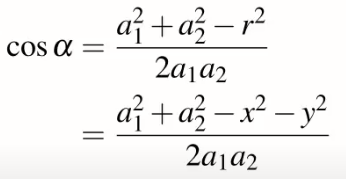
再透過下圖我們可以得知q2=180-alpha
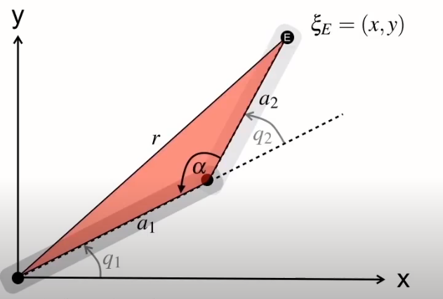
因此可得知COSq2=-COSalpha，將負號移過去可以得到
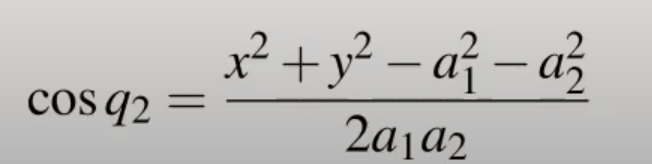
因此我們可以得知q2
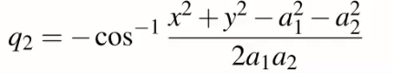
接下來，以a2為長邊畫出一個直角三角形

由這個三角形我們可以得到
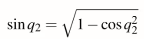
此時劃出一個連接兩條手臂的直角三角形
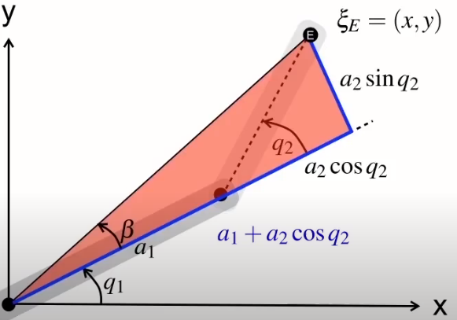
透過此三角形可得出beta角公式
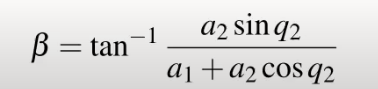
劃出一個大直角三角形
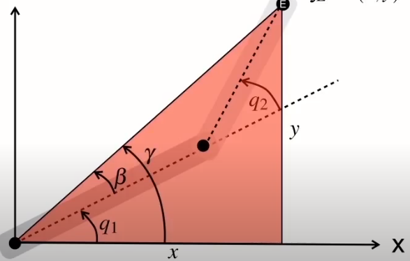
由此三角形可推得

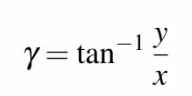
透過前面所推導的公式q1可得
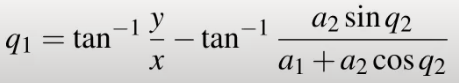
若手臂移動，如下圖
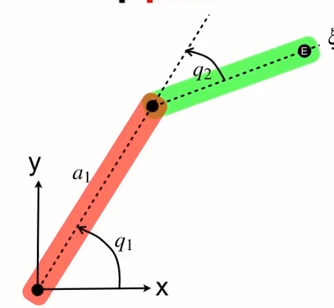
因alpha、beta以及q1關系改變
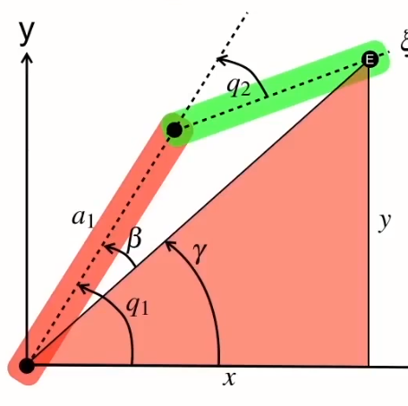
則q1和q2公式會變為
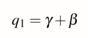
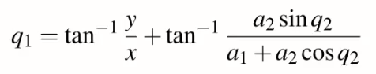
此為兩種比較圖
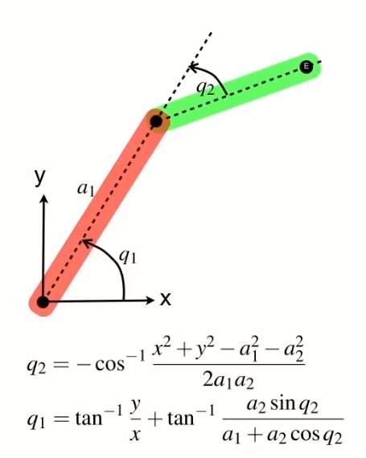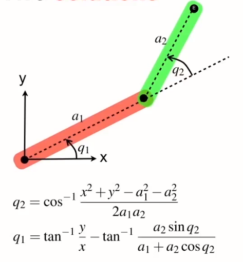
特定的線性函數不是幾何，有一個表達式E
旋轉q1沿x方向平移a1；旋轉q2，由a2在x方向進行平移，如果展開這個，全部相乘
一起轉變得到此表達式，表示尾端姿態的矩陣

分解x與y座標
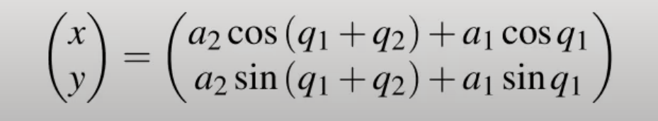
平方X和Y方程式後兩兩相加可得知角度q2
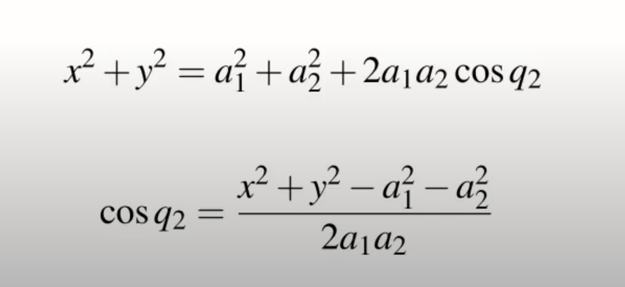
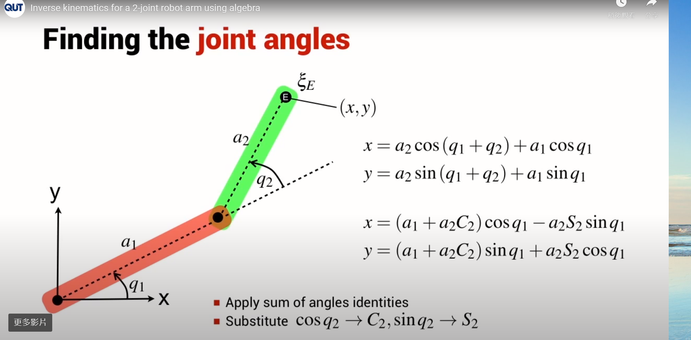
製作後的方程式:
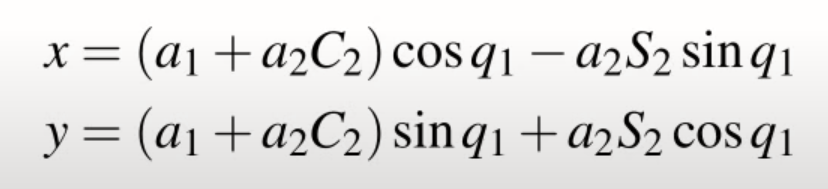
此為已知方程式:
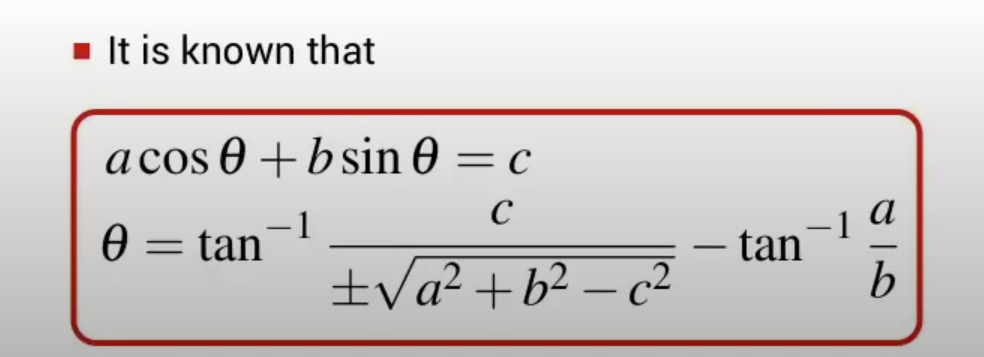
只考慮y的方程式，可以確定a、b、c值，一旦知道這些，那麼就可以有q1的方程式
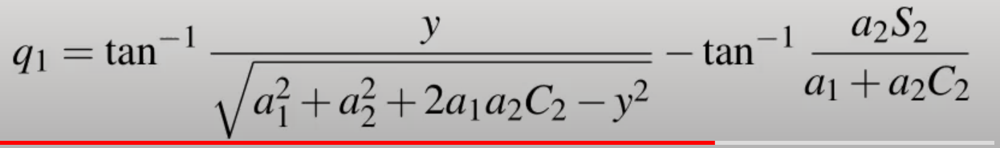

將前面得知地此式，帶入q1進行簡化
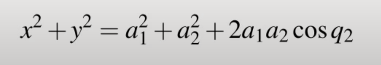
即可得此式
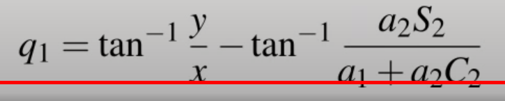
W13 <<
Previous Next >> W16 吸盤手臂